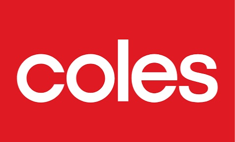
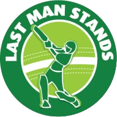
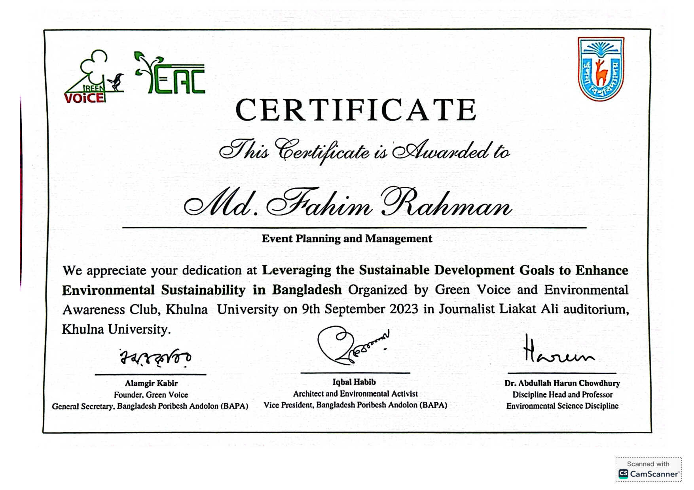
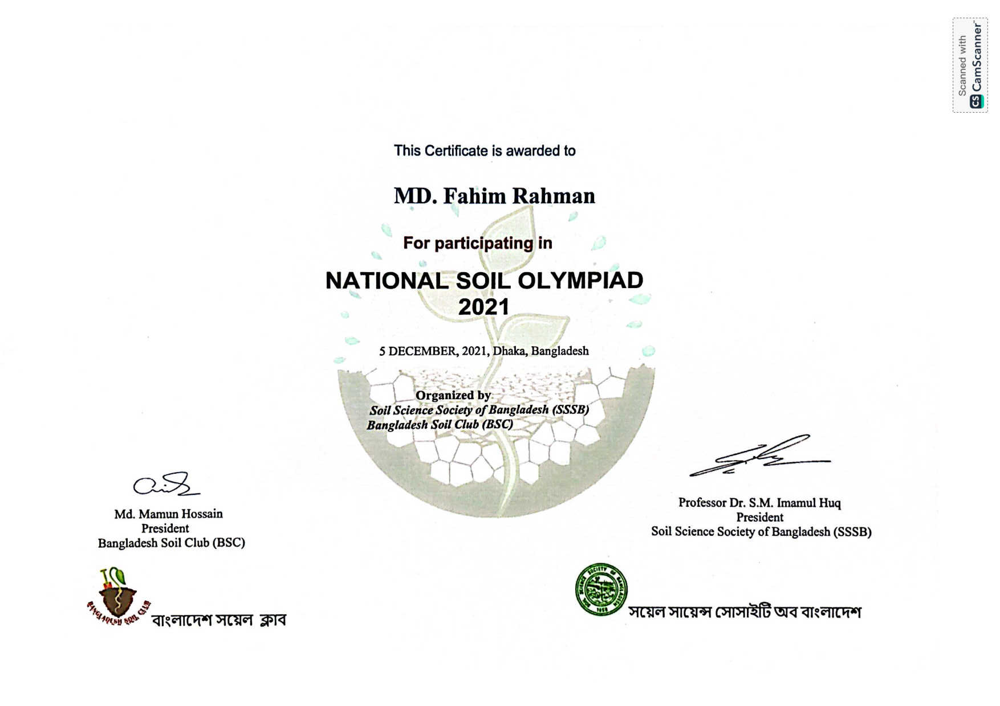
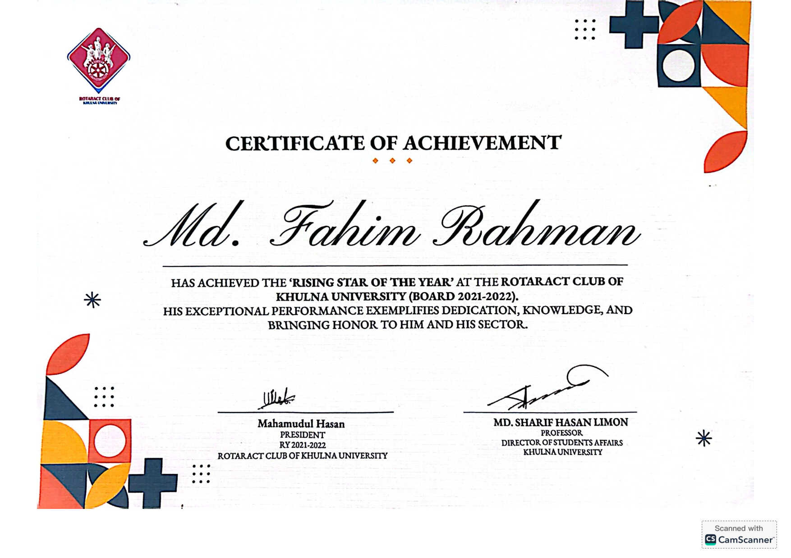
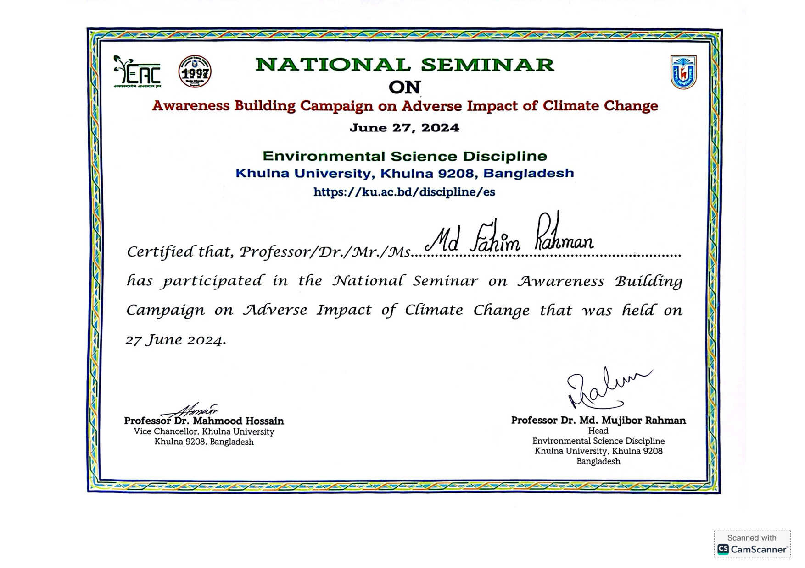
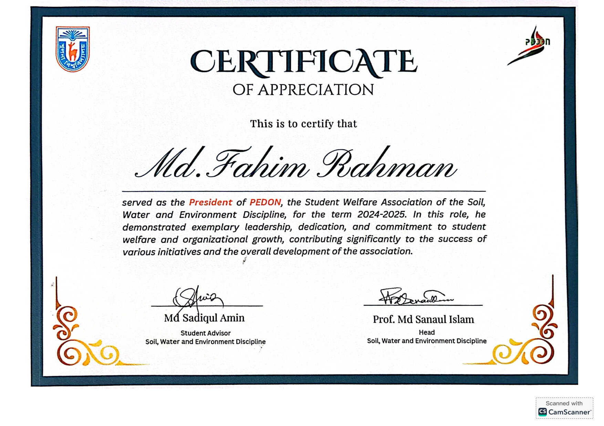
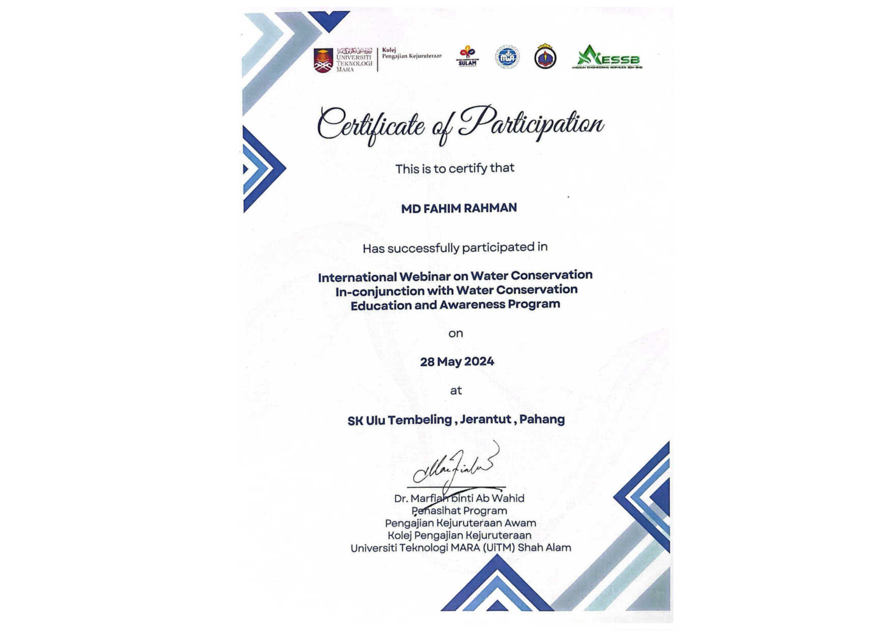
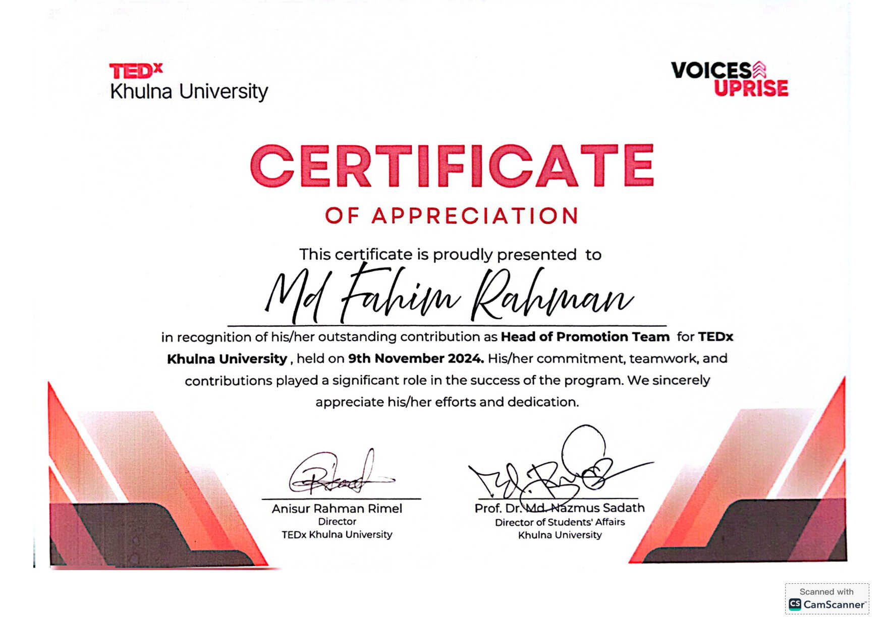

.jpeg)

.jpeg)
.jpeg)

.jpeg)
.jpeg)


.jpeg)

.jpeg)
.jpeg)
.jpeg)


Environmental Consultant & Research Professional
Event Organizer | Social Worker | Cinematography Enthusiast | Socially Engaged Changemaker
I am a Master of Environment student at Macquarie University with a strong academic and practical background in environmental assessment, water quality, soil science, GIS, climate change adaptation, environmental remediation, and sustainability consulting.
Experienced in preparing technical reports, conducting field and laboratory assessments, analysing environmental data, and developing practical recommendations for environmental management. I bring a strong leadership background through active engagement in university associations, community service organisations, and environmental volunteering with Clean4Shore.
Final Grade: 3.52/4.00 (CGPA)
Birsreshtha Munshi Abdur Rouf Public College, Dhaka
GPA: 4.83/5.00 | Science Studies
Mohammadpur Model School And College, Dhaka
GPA: 5.00/5.00 | Science Studies
"Effects of Two-year Organic Manure and Vegetative Cover Practice on Soil Fertility and Aggregate Stability"
Quantification of interactive effects of organic amendments on soil physical and fertility indices.
Supervisor: Professor Md Sanaul Islam, Khulna University
Individual Technical Report
Comprehensive monitoring and assessment of water quality parameters in the creeks of Macquarie University.
Group Technical Report
Detailed environmental assessment and remediation planning for contaminated land in Homebush West.
Group Report
Conducted a comprehensive Environmental Impact Assessment (EIA) for the Eraring Power Station in NSW.
Policy Report
Water Sensitive Urban Design (WSUD) policy proposal tailored to enhance Parramatta's urban water cycle.
Individual Research Report
Assessed climate change adaptation strategies for coastal transportation infrastructure in Samoa.
Scientific Report
Rehabilitation assessment of the urban stream system and ecological health in Manly Lagoon.
Group Field Project
Field research investigating macroinvertebrate communities and ecological relationships.
Individual Infographic
Designed an informative infographic highlighting the impacts of climate change on human health and vulnerability.
Literature Review
Field Investigation
Conducted field investigations including water quality monitoring, riparian vegetation assessment and macroinvertebrate (SIGNAL) analysis to evaluate stream ecosystem health and recommend environmental management strategies.
Climate Risk Assessment
Analysed historical climate trends and future projections for Ballina, NSW, including temperature, rainfall, bushfire weather and sea-level rise, and assessed implications for climate adaptation and community resilience.
Group Project
Developed a climate adaptation strategy for Ballina Shire, NSW, assessing risks like flooding, sea-level rise, and bushfires. Evaluated impacts on infrastructure, ecosystems, and heritage to build evidence-based adaptation strategies and regional resilience KPIs.
Sept 2024
Mini pit description, diagnostic horizon identification, and classification based on US Taxonomy and WRB.
Dec 2023
Developed spatial databases, GIS mapping, and spatial statistics extraction using ArcGIS.
Dec 2023
Slope measurement, contour line formation with A-frame, terrace building, and Jhum cultivation analysis.
Sept 2022
Ecosystem diversity measurement, community analysis, and estimation of biomass (Carbon, Nitrogen, Phosphorus).
Feb 2022
Laboratory analysis of water quality parameters, grading, and water quality monitoring.
Mar 2022
Fieldwork in Sylhet Region (Jaflong, Srimongol, Lawachara) for soil mineral identification and characterization.

Coles Supermarkets, Rutherford, NSW, Australia
Double Take Sports, NSW, Australia
Caltex, NSW, Australia

Last Man Stand, Australia
Lexicon (British Council Examination Venue), Bangladesh
Rotaract Club of Khulna University (2022-2024)
Student Welfare Association (2023-2024)
TEDx Khulna University (2024)
Online Academic Club (2020-2024)
Student Welfare Association (2022-2023)
SWE Discipline Cricket Team (2023)
Clean4Shore (Australia), Three Minute Thesis Competition, National Soil Olympiad.
Khulna University (2022-2023)
Rotaract Club (2022-2023)
Annual Recognition (2021-2022)
Tournament 2023







I am always open to discussing research collaborations, environmental initiatives, or professional opportunities.
rrfahim12@gmail.com
/in/fahim24
Available Weekdays (Mon, Wed, Fri-Sun), Weekends, Nights, and Public Holidays.
Available upon request from academic supervisors at Khulna University: Prof. Md Sanaul Islam & Md. Sadiqul Amin.